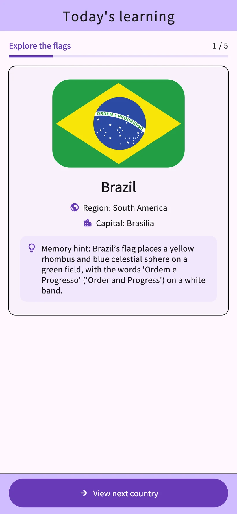
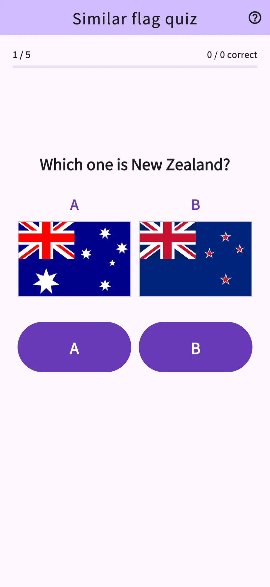
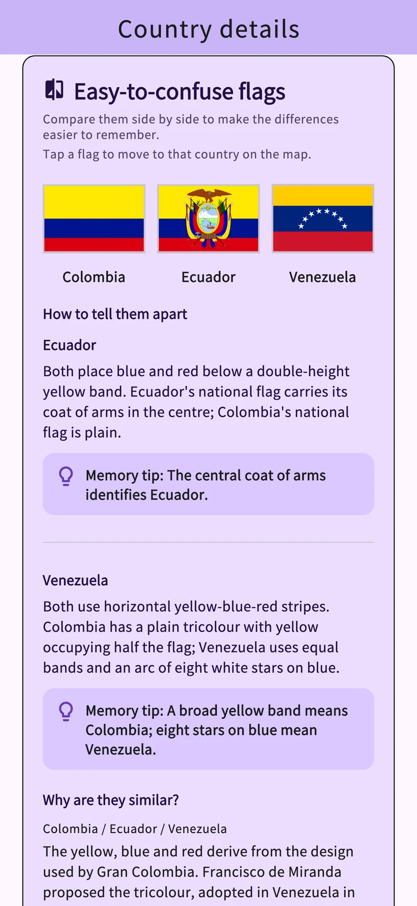
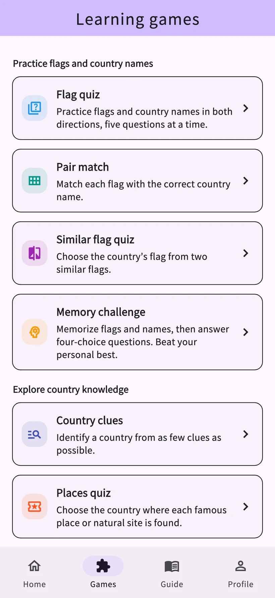

01
Flag quiz
Choose a country name for a flag or the right flag for a country.
Flag Quiz Awa Pop
Learn flags and capitals from 206 countries and territories.
Daily lessons and eight games help you check what you remember.
iPhone & Android / Free download with in-app purchases


Actual app screens
Study flags and country names, then check them in a quiz. Review sessions use your learning history.
The records screen uses sample data. Detailed learning analysis is available with Study Plus.
Compare colours and patterns to learn the differences. Try this example with the flags of France and Italy.
A sample made for this website to demonstrate flag recognition. It looks different from the app.
Practise flags, country names, landmarks and neighbouring countries. Choose a game for the topic you want to learn.
Choose a country name for a flag or the right flag for a country.
Connect each flag to its country name.
Choose the correct flag from two similar designs.
Memorise flags and country names, then answer multiple-choice questions.
Identify a country as clues appear.
Identify countries from landmarks and natural heritage.
Compare the population, area and other figures of two countries.
Choose the countries that share a land border.


Explore flags, capitals, maps, origins and culture for 206 countries and territories. Look up the places that catch your eye in a quiz.
Share culture and recommendations from your country or territory. User posts are translated and reviewed before publication, then readable in supported languages.
Nicknames are optional. You can report and hide posts. YouTube videos open externally.
Daily learning
An eligible rewarded video adds 3 uses to your selected allowance for that day. Reopening the same country on the same day uses no extra allowance.
Unlimited use without ads
Auto-renewing monthly & annual plans
Eligible users can try the monthly plan free for one month. The annual plan has no free trial.
Check the in-app purchase screen for prices, trial eligibility, charges after the trial and renewal periods.
The app supports Japanese, English, Spanish, German, Korean, Thai, Indonesian, French, Portuguese (Brazil) and Traditional Chinese (Taiwan).
Today’s Learning and regular review are free. Country details are limited to 3 distinct countries a day, and the Games tab to 3 game starts in total a day. Eligible rewarded videos add 3 uses to your selected allowance for that day.
Eligible users can try the monthly plan free for one month. There is no free trial on the annual plan. See the in-app purchase screen for prices and eligibility.
No registration or sign-in is required. You can submit Country Stories and feedback from the app.
Learning records are saved on your device and do not sync automatically. Restoring purchases is separate from transferring learning records.
People interested in flags and geography can learn at their own pace. The app includes ads, optional purchases, posting and external links. Please review these together with a parent or guardian when young children use the app.
Posts are submitted after agreement to the posting, translation and publication rules, then translated and reviewed before publication. Nicknames are optional. You can delete your own post, report posts and hide them.
Try the daily lessons and eight games in the app.
iPhone & Android / Free download with in-app purchases